Transform your hair with expert-inspired routines and advice!
Healthy hair care starts with understanding your routine and products.
Discover gentle routines, expert tips, and handpicked products designed to make your hair stronger, shinier, and happier every day.
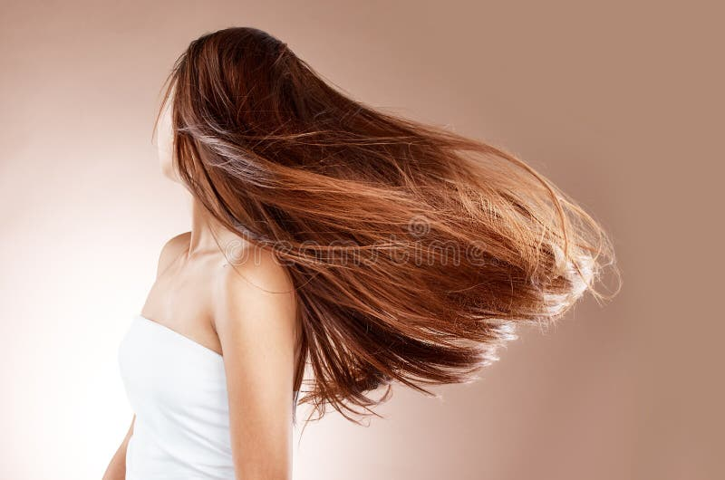
Simple habits that make a big difference to your hair health ✨
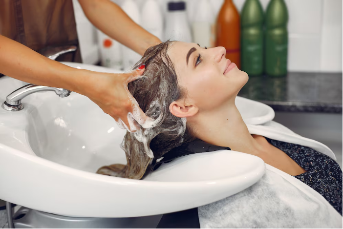
Avoid over-washing to keep natural oils intact.
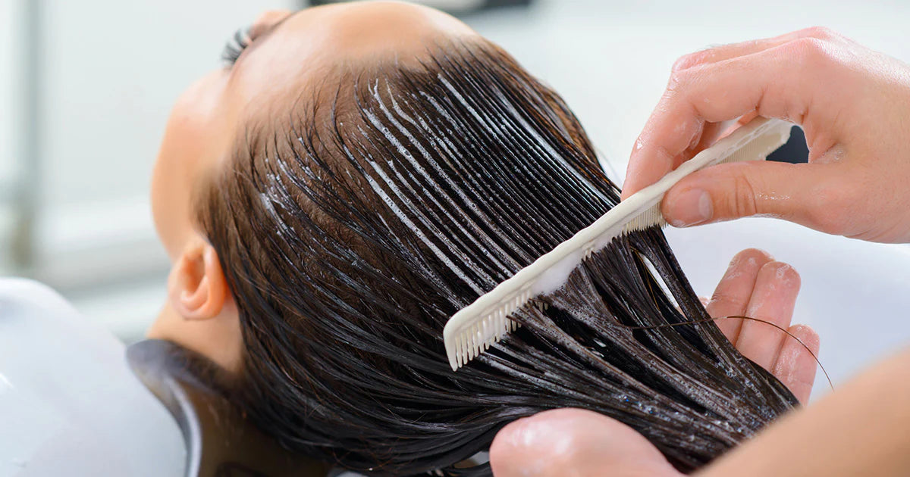
Deep condition once a week for shine and repair.
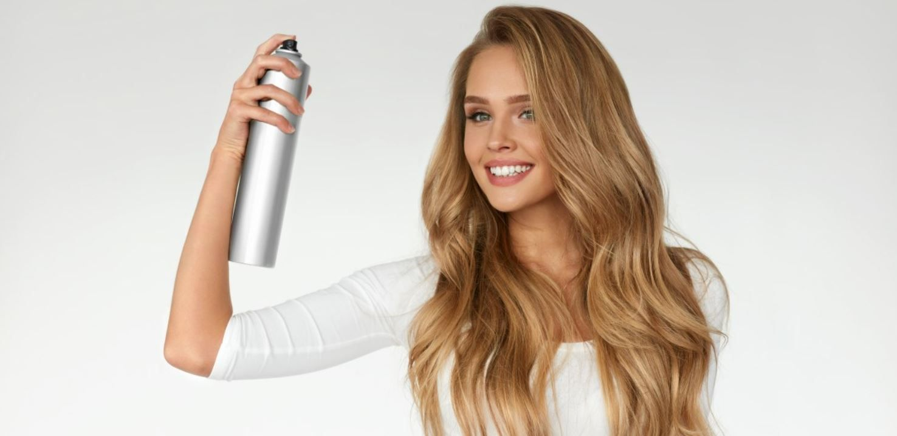
Always protect hair before styling with heat tools.
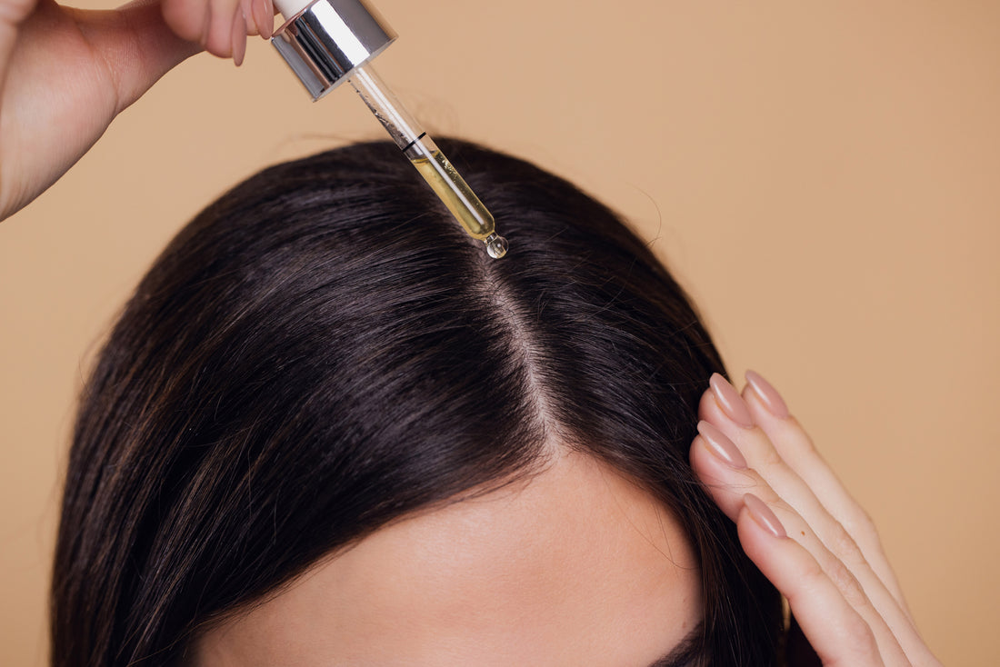
Healthy scalp means stronger hair growth.
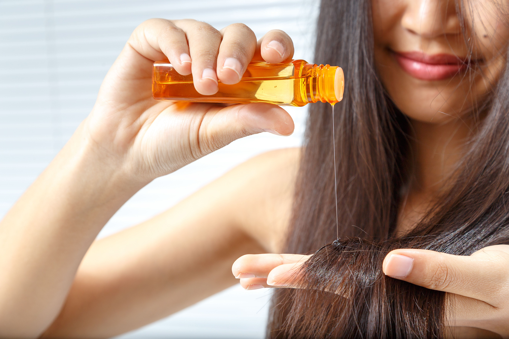
Massage oils to nourish roots and reduce dryness.
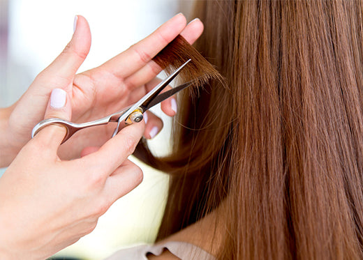
Trim split ends every few weeks for neat hair.
Follow these simple steps to keep your hair healthy, shiny, and full of life 💕
Wash your hair 2–3 times a week using a sulfate-free shampoo to maintain natural oils and prevent dryness.
Apply conditioner to mid-lengths and ends only. Detangle gently using a wide-tooth comb.
Nourish your hair with a deep conditioning mask once a week to repair damage and boost shine.
Massage your scalp with natural oils like coconut or argan oil to improve blood circulation and hair growth.
Always apply a heat protectant before styling to minimize damage and keep hair smooth.
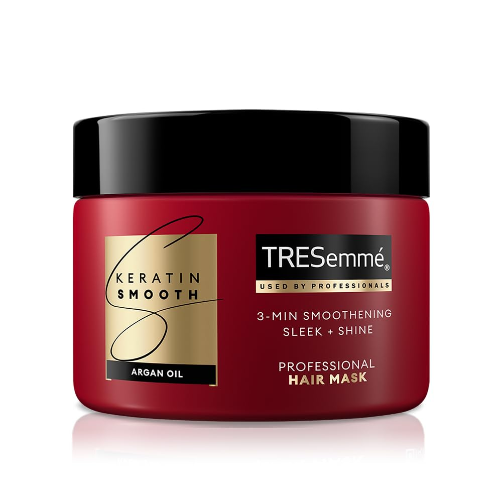
TRESemme Keratin Smooth Mask(Keratin Protein&Argan Oil)
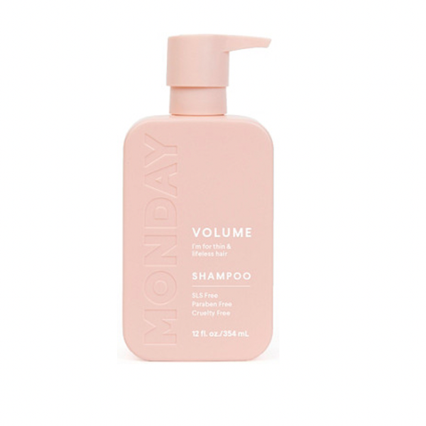
MONDAY Haircare Smooth Shampoo(Shea Butter for Hair Nourishment)
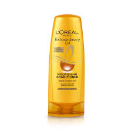
L'Oreal Paris Extraordinary Oil Nourishing Conditioner
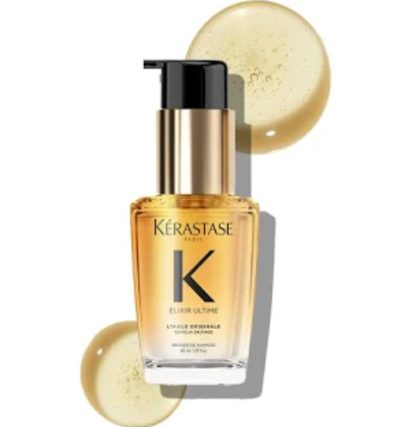
Kérastase Elixir Ultime Hair Oil with precious oils to nourish
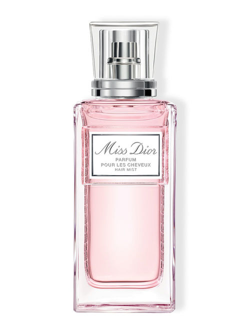
DIOR Miss Dior Parfum Pour Les Cheveux Hair Mist
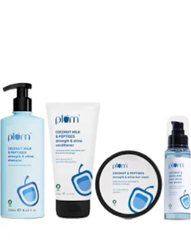
Plum Coconut & Peptides Hair Strength & Shine Combo natural extracts and peptides
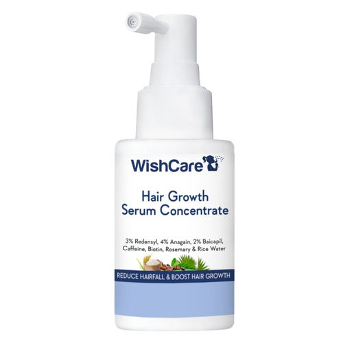
WishCare Hair Growth Serum(Resdensyl, Anagain, Caffeine, Biotin, Keratin&Rice Water)
Your most common hair questions, answered with love 💗
Washing depends on your hair type. Oily hair may need washing 2–3 times a week, while dry or curly hair benefits from fewer washes.
Yes! Hair masks deeply nourish and repair damage. Using a mask once a week improves softness, strength, and shine.
Maintain a healthy scalp, avoid excessive heat styling, oil regularly, and eat a balanced diet rich in vitamins and protein.
Oiling works for most hair types, but the frequency and type of oil should be chosen based on your scalp and hair needs.
Daily heat styling can damage hair. Always use a heat protectant and limit usage to maintain healthy strands.
Regular conditioning, proper hydration, scalp massage, and avoiding harsh chemicals help restore natural shine.